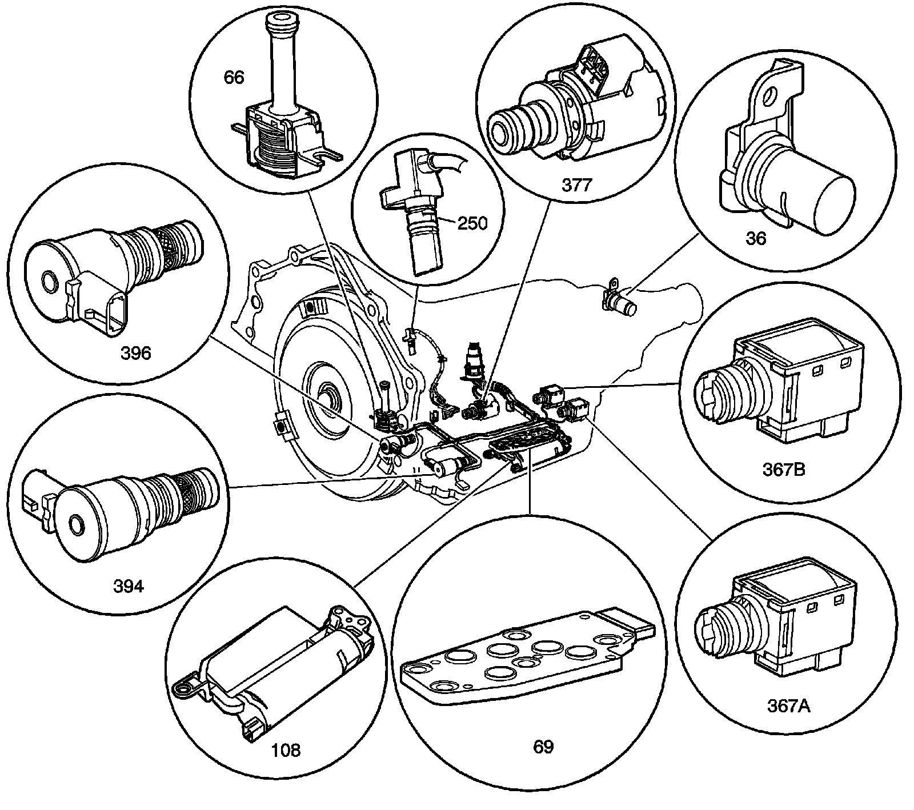
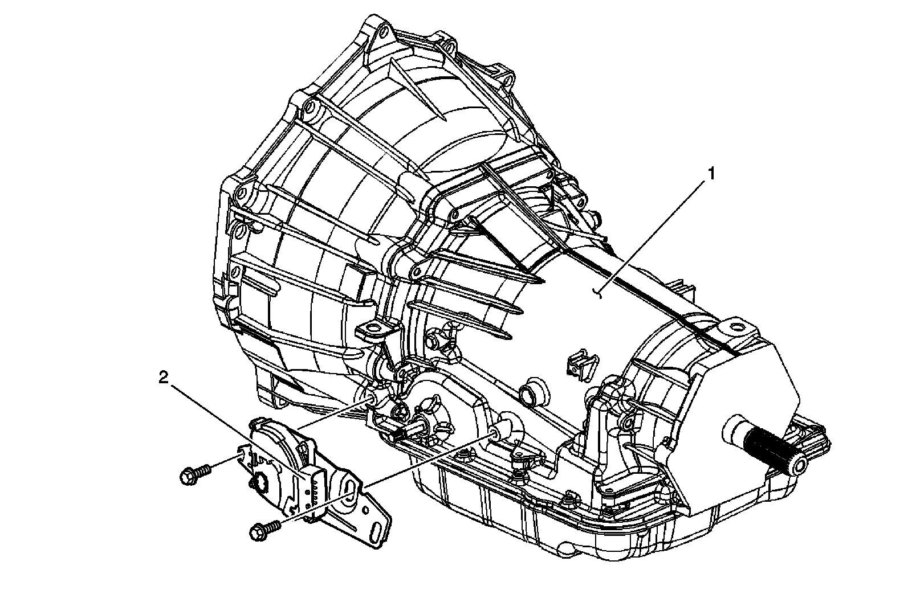
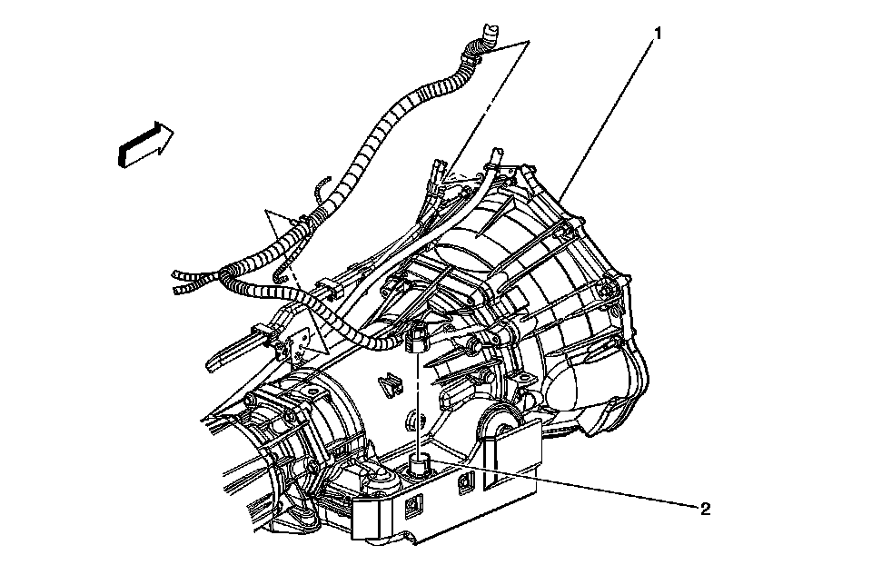
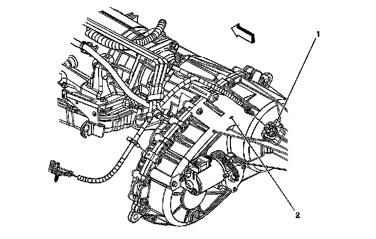
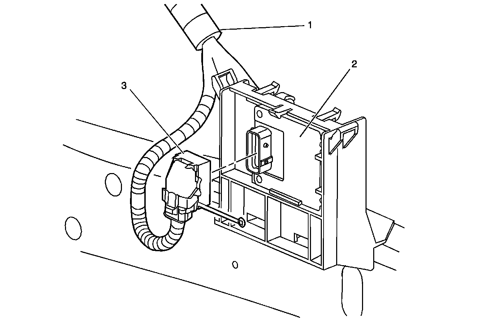

Automatic Transmission Electronic Component Views
Automatic Transmission Electronic Component Views
Electronic Components
Electronic Components:

36 - Vehicle Speed Sensor (VSS) - Model Dependent
66 - Torque Converter Clutch (TCC) Solenoid Valve
69 - Automatic Transmission Fluid Pressure (TFP) Manual Valve Position Switch
250 - Input Speed Sensor (ISS) Assembly - Model Dependent
367a - 1-2 Shift Solenoid (SS) Valve
367b - 2-3 Shift Solenoid (SS) Valve
377 - Pressure Control (PC) Solenoid Valve
394 - 3-2 Shift Solenoid (SS) Valve Assembly
396 - Torque Converter Clutch Pulse Width Modulation (TCC PWM) Solenoid Valve
Park Neutral Position (PNP) Switch
Park Neutral Position (PNP) Switch:

1 - Automatic Transmission 4L60-E/4L65-E/4L70
2 - Park/Neutral Position (PNP) Switch
C175
C175:

1 - Automatic Transmission
2 - C175
Vehicle Speed Sensor (VSS)
Vehicle Speed Sensor (VSS):

1 - VSS Sensor
2 - Transfer Case
Transmission Control Module (TCM)
Transmission Control Module (TCM):

1 - Engine Harness
2 - Transmission Control Module (TCM)
3 - Transmission Control Module (TCM) Connector Harness